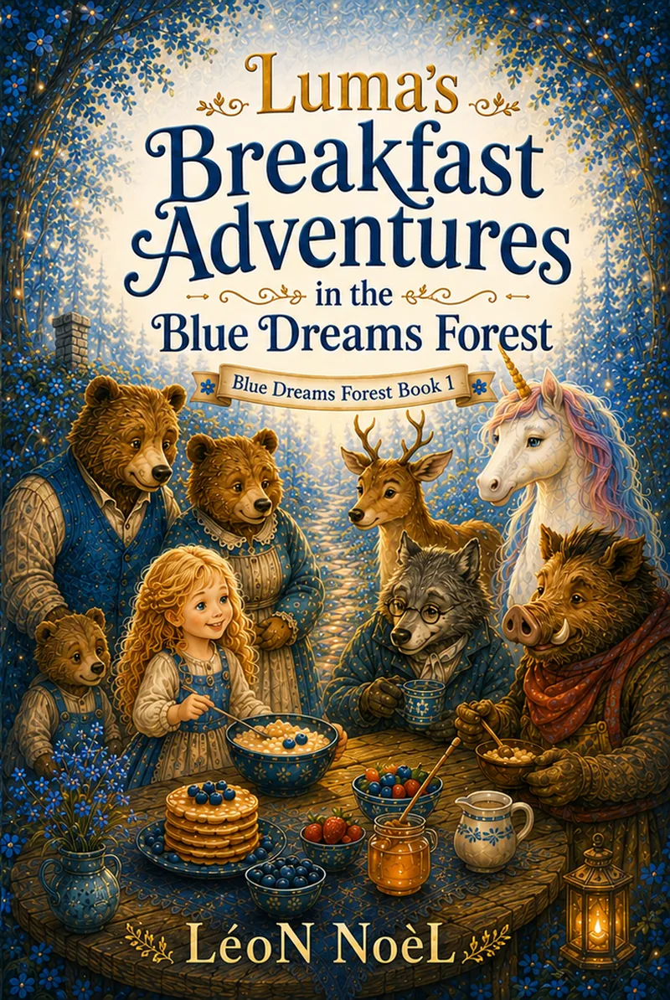
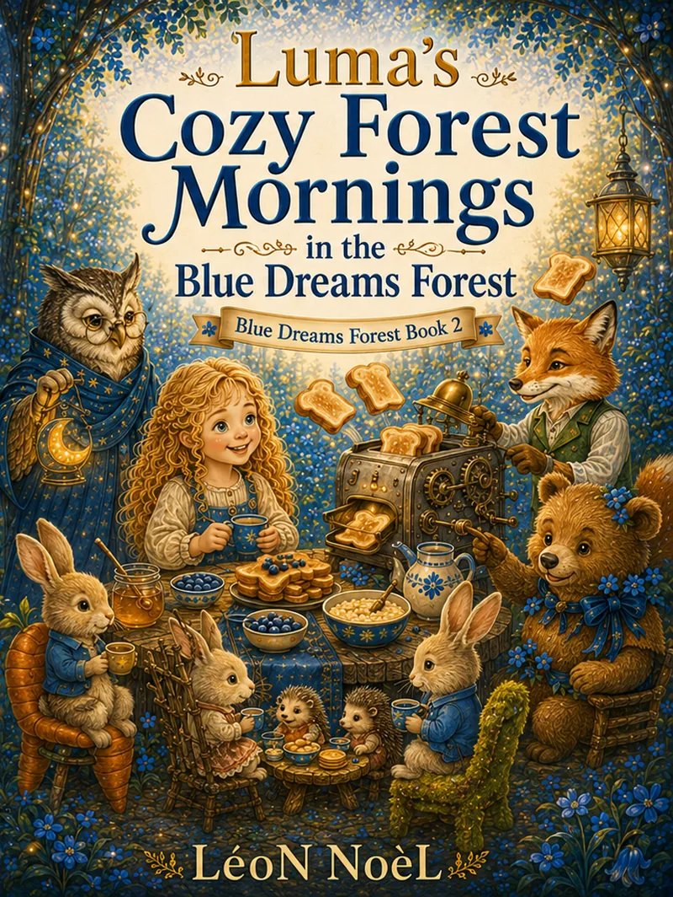
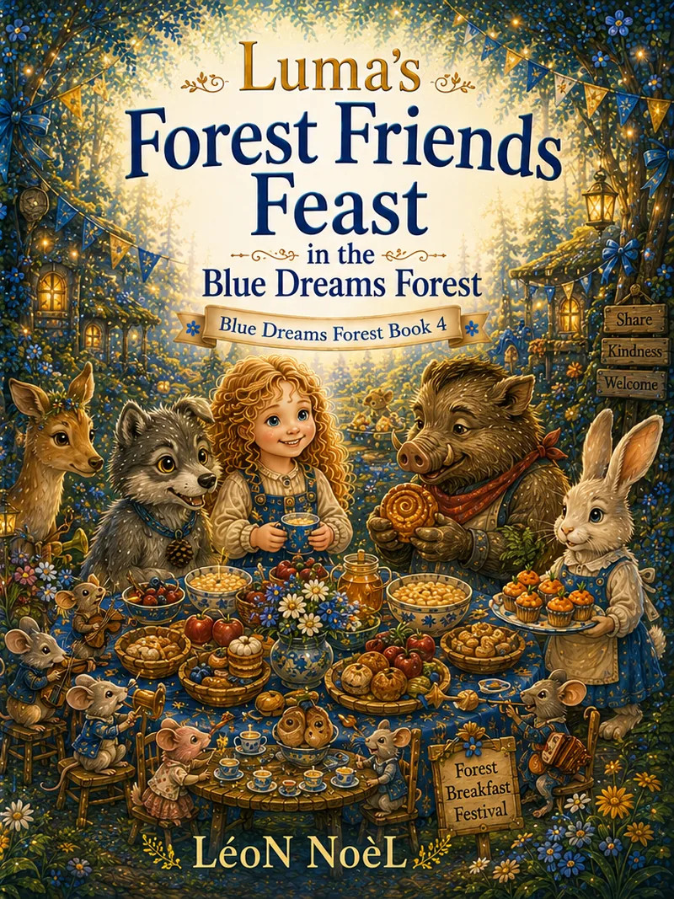
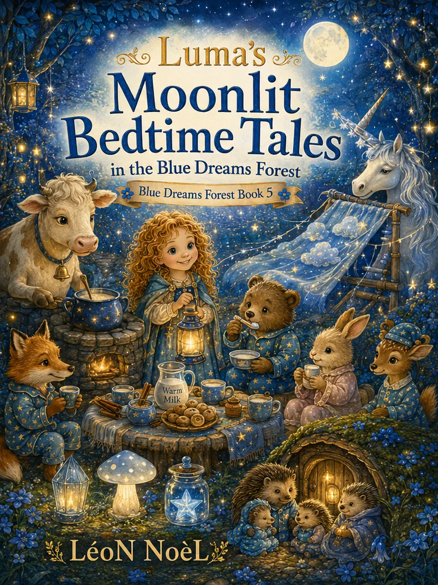
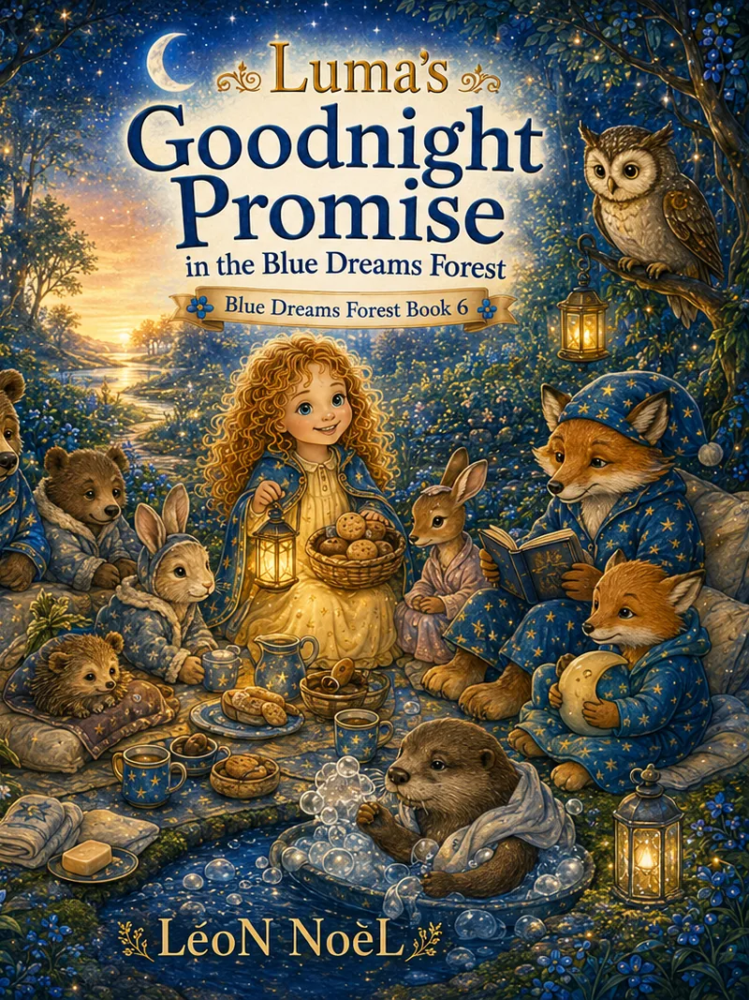

01
Luma’s Blue Dreams Forest · Ages 4–8
Five gentle stories in every volume.
Illustrated read-aloud anthologies for bedtime, shared reading, and developing readers.

The complete collection
Choose your next story.

02 03
03
04
05
06